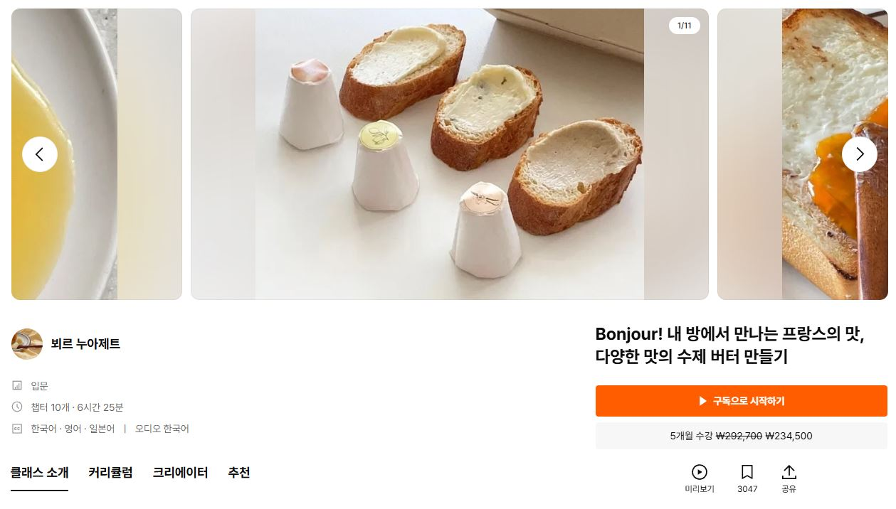

01 / Branding
페르망 버터
Fermant Butter
발효 버터라는 생소한 카테고리를 하나의 브랜드로 정립한 작업입니다. 제품의 본질인 '발효'와 '정성'을 키워드로 브랜드 스토리와 비주얼 아이덴티티를 구축하고, 패키지·교육 콘텐츠·사업화 자료까지 일관된 톤으로 전개했습니다. 경남관광 스타트업·예비창업패키지 등 다수의 지원사업 자료에도 활용되었습니다.
Role — 브랜드 기획 · 로고 · 패키지 · 사업화 자료 디자인

